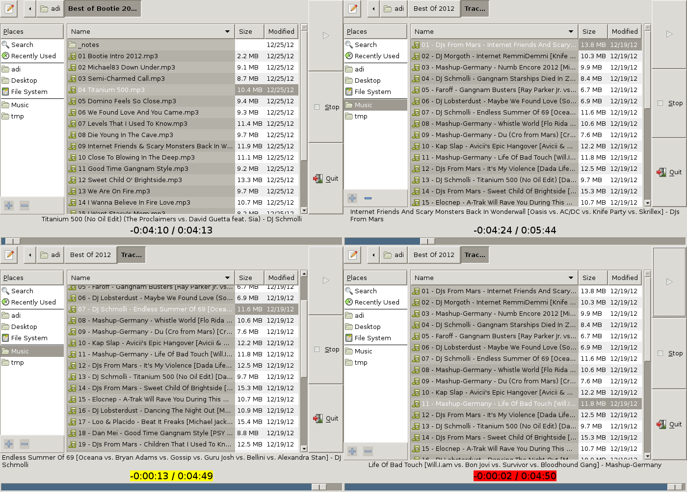
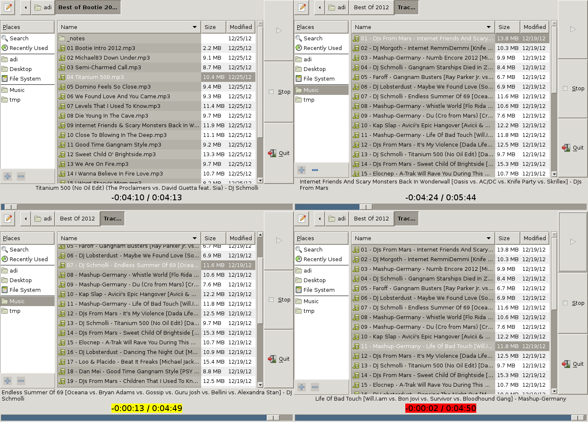

4deckradio
Multi-deck media playback for radio stations

Still very early development
Prerequisites:
- gstreamer-1.0 (development packages)
- GTK-3.x (development packages)
- jackd
- make
Compile:
cd gstreamer && make
Run:
./4deckradio
Multi-deck media playback for radio stations

Still very early development
Prerequisites:
Compile:
cd gstreamer && make
Run:
./4deckradio